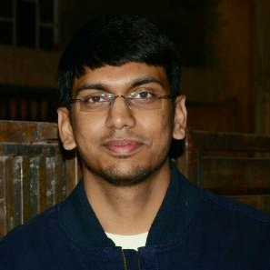

|
Vedanuj Goswami
I am a research engineer at Meta Research (FAIR) focusing on machine translation and multimodal understanding. Previously I worked on computer vision for AR/VR at Meta Reality Labs. I did my Masters in machine learning from Georgia Tech. Before that, I received a Bachelor's degree in computer science from NITS, India and worked briefly at Samsung Camera R&D.
Email /
Github /
Google Scholar /
LinkedIn /
Twitter
|

|
|
Research
My research focuses on machine learning, computer vision and natural language processing. In particular, I am interested in large scale self supervised training, multitask learning for multimodal understanding and machine translation.
|
No Language Left Behind: Scaling Human-Centered Machine Translation
NLLB Team*, Marta R. Costa-jussa*, James Cross*, Onur Celebi*, Maha Elbayad*, Kenneth Heafield*, Kevin Heffernan*, Elahe Kalbassi*, Janice Lam*, Daniel Licht*, Jean Maillard*, Anna Sun*, Skyler Wang*, Guillaume Wenzek*, Al Youngblood*, Bapi Akula, Loic Barrault, Gabriel Mejia Gonzalez, Prangthip Hansanti, John Hoffman, Semarley Jarrett, Kaushik Ram Sadagopan, Dirk Rowe, Shannon Spruit, Chau Tran, Pierre Andrews†, Necip Fazil Ayan†, Shruti Bhosale†, Sergey Edunov†, Angela Fan†, Cynthia Gao†, Vedanuj Goswami†, Francisco Guzman†, Philipp Koehn†, Alexandre Mourachko†, Christophe Ropers†, Safiyyah Saleem†, Holger Schwenk†, Jeff Wang†
† Research and engineering leadership, equal contribution
arxiv / website / code / demo
A massively multilingual model that can translate between any pair among 200+ languages.
|
FLAVA: A Foundational Language And Vision Alignment Model
Amanpreet Singh*, Ronghang Hu*, Vedanuj Goswami*, Guillaume Couairon, Wojciech Galuba, Marcus Rohrbach, Douwe Kiela
* equal contribution
CVPR, 2022
arxiv / website / code
A foundaltional model for vision and language alignment, that can perform vision, language, and cross- and multi-modal vision and language tasks.
|
Creative Sketch Generation
Songwei Ge, Vedanuj Goswami, Larry Zitnick, Devi Parikh
ICLR, 2021
arxiv / bibtex / slides
Two new datasets for creative skecthes and a novel model(DoodlerGAN) to generate unseen compositions of novel part appearances.
|
MoVie: Revisiting Modulated Convolutions for Visual Counting and Beyond
Duy-Kien Nguyen, Vedanuj Goswami, Xinlei Chen
ICLR, 2021
arxiv / bibtex / slides
Modulated convolutional bottleneck architecture for improving visual counting, which achieves SOTA in VQA and winner of 2020 VQA Challenge at CVPR.
|
Human-adversarial Visual Question Answering
Sasha Sheng, Amanpreet Singh, Vedanuj Goswami, Jose Magana, Tristan Thrush, Wojciech Galuba, Devi Parikh, Douwe Kiela
NeurIPS, 2021
arxiv / website / bibtex / slides
Adversarial dataset and benchmark that is collected with Human-and-Model-in-the-loop for evaluating the robustness of state-of-the-art VQA systems.
|
The Hateful Memes Challenge: Detecting Hate Speech in Multimodal Memes
Douwe Kiela, Hamed Firooz, Aravind Mohan, Vedanuj Goswami, Amanpreet Singh, Pratik Ringshia, Davide Testuggine
NeurIPS, 2020
arxiv / blog / bibtex / code
New benchmark for multimodal classification, focusing on detecting hate speech in multimodal memes.
|
Only Time Can Tell: Discovering Temporal Data for Temporal Modeling
Laura Sevilla-Lara, Shengxin Zha, Zhicheng Yan, Vedanuj Goswami, Matt Feiszli, Lorenzo Torresani
WACV, 2021
arxiv / blog / bibtex
A methodology to discover the relevance of temporal information in action classes and use it to identify categories that contain more temporal information (temporal classes).
|
12-in-1: Multi-Task Vision and Language Representation Learning
Jiasen Lu*, Vedanuj Goswami*, Marcus Rohrbach, Devi Parikh, Stefan Lee
* equal contribution
CVPR, 2020
arxiv / bibtex
An approach for effective multi-task learning. Trained a single model on 12 popular vision-and-language tasks improving upon individual task-specific models.
datasets..
|
Unsupervised Image-to-Video Clothing Transfer
Albert Pumarola, Vedanuj Goswami, Francisco Vicente, Fernando De la Torre, Francesc Moreno-Noguer
ICCV Workshop, 2019
website
Unsupervised photo-realistic transfer of clothing of a person in a reference image into another person in an unconstrained image or video.
|
Knowledge Extraction and Annotation for Cross-Domain Textual Case-Based Reasoning in Biologically Inspired Design
Spencer Rugaber, Shruti Bhati, Vedanuj Goswami, Evangelia Spiliopoulou, Sasha Azad, Sridevi Koushik, Rishikesh Kulkarni, Mithun Kumble, Sriya Sarathy,
Ashok Goel
ICCBR, 2016
pdf /
blog /
poster /
bibtex
NLP framework for extracting partial SBF (Structure, Behavior, Function) models of biological systems from natural language documents for potential use in biologically inspired design.
|
Grammarless Language Generation Algorithm Based on Idiotypic Artificial Immune Networks
Vedanuj Goswami, Samir Borgohain
ACALCI, 2015
code /
bibtex
Algorithm to differentiate between correct and wrong grammatical sentence constructs using artificial immune networks.
|
|